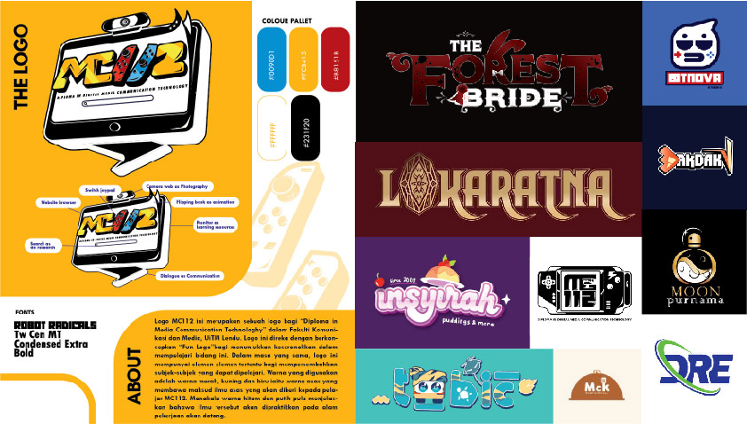

A collection of logo designs from real projects, class assignments, exhibitions, and commissions. Each of them created with intention and a little bit of heart.
These are samples of banner and bunting designs I created for three different clients which are a surau, a local food stall, and a kindergarten. Each design was tailored to match the concept and purpose of its location, using clear typography, balanced layouts, and thoughtful color choices.This project showcases my versatility in designing for various types of content while maintaining a clean and visually engaging style.

This is a small collection of posters I designed for various local events including school functions, housing area gatherings, and casual sales. I focused on keeping the layout simple, the message clear, and the look visually appealing.

These are illustrations I created using Adobe Illustrator, both for assignments and personal practice. Some of them are traced from real images, while others are fully drawn from my own imagination.

Toobic is an e-hailing service company that embraces the rich cultural identity of Malaysia’s East Coast. The name “Toobic” is creatively derived from the local dialect word “Tubik”, commonly used in Kelantan and Terengganu, meaning “to go out” or “to move”.
For the subject matter, the designer chose the Semutar Kesum Sejambak, a traditional cloth wrap often worn by East Coast men to protect their heads from the heat. This iconic element is transformed into various graphic and multimedia designs, establishing a strong and recognizable corporate identity.
The chosen color palette—blue, light yellow, and orange—symbolizes trustworthiness, passenger friendliness, and a cheerful atmosphere.
To further capture local charm and approachability, Toobic uses catchy slogans like “Nok gih derak?” and “Maghi gih derak!”, both local dialect phrases meaning “Let’s go!”—inviting users to hop on and enjoy the ride with Toobic.